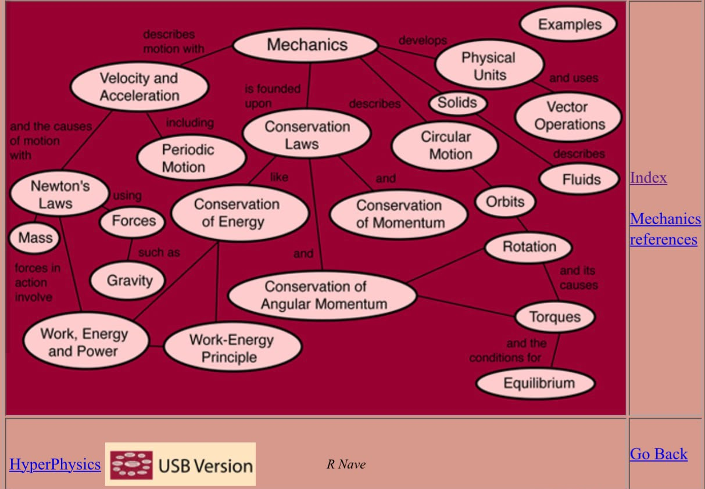
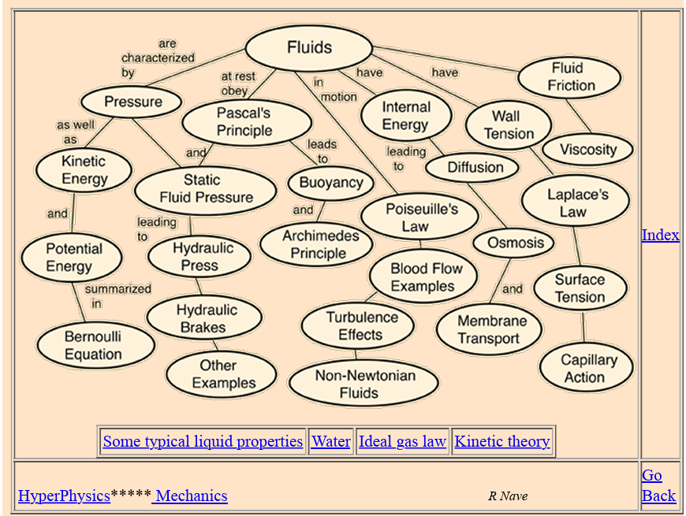
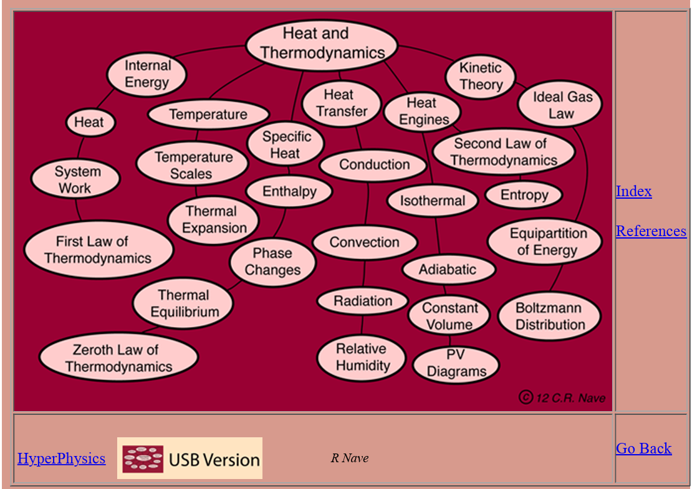

المواد الأساسية في التخصص
المقررات الجوهرية التي تشكل العصب الأساسي لفهم وتطبيق الهندسة الكيميائية.
موازنة المادة والطاقة
تُعد موازنة المادة والطاقة أول مادة تخصصية في الهندسة الكيميائية، وتهدف إلى تطبيق قوانين حفظ الكتلة والطاقة لتحليل العمليات الصناعية، وحساب كميات المواد والطاقة الداخلة والخارجة من المعدات والأنظمة الكيميائية.
الأهداف
- فهم قانون حفظ المادة والطاقة.
- إجراء موازنة المادة والطاقة للعمليات المختلفة.
- تحليل تدفقات المواد داخل المصانع.
- بناء الأساس لبقية مواد الهندسة الكيميائية.
الموضوعات الرئيسية
- الوحدات والتحويلات.
- العمليات المستقرة وغير المستقرة.
- موازنة المادة وموازنة الطاقة.
- عمليات الخلط والفصل.
- العمليات ذات التفاعل الكيميائي.
- (Recycle), (Bypass), (Purge).
أين تُطبق؟
- الخلط، التسخين والتبريد.
- التقطير، التبخير، التجفيف.
- التفاعلات الكيميائية.
- المفاعلات، المبادلات الحرارية.
- أبراج التقطير، الخزانات، الخلاطات.
الديناميكا الحرارية
تدرس العلاقة بين الحرارة والشغل والطاقة، وسلوك المواد في مختلف الظروف، وتوضح كيفية انتقال الطاقة وتحولها داخل العمليات الكيميائية.
الأهداف
- فهم قوانين الديناميكا الحرارية.
- دراسة خواص الموائع.
- تحليل اتزان الأطوار.
- حساب الطاقة في العمليات.
الموضوعات الرئيسية
- القانون الأول والثاني للديناميكا الحرارية.
- الإنثالبي والإنتروبي.
- اتزان الأطوار.
أين تُطبق؟
- تسخين وتبريد الموائع، التبخير والتكثيف.
- التقطير، التفاعلات الماصة والطاردة للحرارة.
- إنتاج البخار، أنظمة التبريد والتكييف.
- المبادلات الحرارية، الغلايات، المكثفات.
- المبخرات، الأفران الصناعية، التوربينات.
- الضواغط، المضخات، صمامات خفض الضغط.
انتقال الزخم (ميكانيكا الموائع)
يدرس حركة الموائع والقوى المؤثرة عليها، ويُعد أساس تصميم أنظمة نقل السوائل والغازات داخل المصانع.
الأهداف
- فهم حركة الموائع.
- حساب الفقد في الضغط.
- تصميم أنظمة الأنابيب.
- اختيار المضخات.
الموضوعات الرئيسية
- خصائص الموائع.
- معادلة برنولي.
- الفقد في الضغط والجريان داخل الأنابيب.
- المضخات وعدادات التدفق.
أين تُطبق؟
- نقل السوائل والغازات.
- الجريان داخل الأنابيب وحساب فاقد الضغط.
- المضخات، الضواغط.
- الأنابيب، الصمامات.
انتقال الحرارة
تدرس هذه المادة آليات انتقال الطاقة الحرارية بين الأجسام والموائع، وتوضح كيفية حساب وتحليل وتصميم أنظمة نقل الحرارة في العمليات الصناعية.
الأهداف
- فهم آليات انتقال الحرارة المختلفة.
- تحليل معدلات انتقال الحرارة.
- تصميم وتحليل المبادلات الحرارية.
- تحسين كفاءة استخدام الطاقة.
الموضوعات الرئيسية
- التوصيل، الحمل، والإشعاع الحراري.
- المبادلات الحرارية.
- الغليان والتكثيف.
أين تُطبق؟
- التسخين، التبريد، التبخير، التكثيف.
- المبادلات الحرارية، الغلايات.
- المكثفات، المبخرات.
انتقال الكتلة
تدرس هذه المادة انتقال المواد بين الأطوار المختلفة نتيجة فروق التركيز، وتُعد الأساس العلمي لمعظم عمليات الفصل في الهندسة الكيميائية.
الأهداف
- فهم آليات انتقال الكتلة.
- تحليل معدلات الانتشار.
- دراسة انتقال المادة بين الأطوار.
- تطبيق مبادئ انتقال الكتلة في تصميم عمليات الفصل.
الموضوعات الرئيسية
- الانتشار الجزيئي، الانتقال بالحمل.
- معاملات انتقال الكتلة.
- الانتقال بين الأطوار، ونظريات انتقال الكتلة.
أين تُطبق؟
- عمليات الفصل مثل التقطير والامتصاص.
عمليات الفصل
تتناول هذه المادة المبادئ والطرق المستخدمة لفصل مكونات المخاليط اعتماداً على اختلاف خواصها الفيزيائية أو الكيميائية، وهي من أهم العمليات في الصناعات الكيميائية.
الأهداف
- فهم مبادئ عمليات الفصل واختيار التقنية المناسبة.
- تصميم وتحليل وحدات الفصل.
- تحسين كفاءة عمليات الفصل.
الموضوعات الرئيسية
- التقطير، الامتصاص، الاستخلاص.
- الامتزاز، التجفيف.
- الترشيح، الأغشية.
أين تُطبق؟
- التقطير، الامتصاص، الاستخلاص، الترشيح، التجفيف.
- أبراج التقطير والامتصاص.
- وحدات الاستخلاص، المرشحات، المجففات.
هندسة التفاعلات الكيميائية
تدرس هذه المادة حركية التفاعلات الكيميائية وتصميم وتشغيل المفاعلات، بهدف تحقيق أعلى إنتاجية وكفاءة مع ضمان سلامة العملية.
الأهداف
- فهم حركية التفاعلات الكيميائية.
- تحليل العوامل المؤثرة في سرعة التفاعل.
- تصميم المفاعلات الكيميائية.
- اختيار ظروف التشغيل المثلى.
الموضوعات الرئيسية
- حركية التفاعلات وقوانين سرعة التفاعل.
- المفاعلات الدفعية (Batch Reactors).
- المفاعلات المستمرة (CSTR, PFR).
- المفاعلات الحفزية.
أين تُطبق؟
- التفاعلات الكيميائية، التحفيز.
- إنتاج المواد الكيميائية وتشغيل المفاعلات.
- المفاعلات الدفعية.
- مفاعلات الخزان المستمر (CSTR).
- المفاعلات الأنبوبية (PFR)، والحفزية (PBR).
الخرائط الذهنية والتلاخيص
خرائط تفاعلية وتلاخيص مرئية لأهم المفاهيم في المواد الأساسية.

خريطة الميكانيكا
خريطة شاملة لمفاهيم الميكانيكا، السرعة، التسارع وقوانين حفظ الطاقة من HyperPhysics.

خريطة ميكانيكا الموائع
خريطة شاملة لمفاهيم الموائع، الضغط، الطفو، ومعادلة برنولي من HyperPhysics.

خريطة الحرارة والديناميكا
خريطة شاملة لمفاهيم الحرارة، انتقال الطاقة، وقوانين الديناميكا الحرارية.